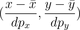

Medidas do corpo

Gráfico de Dispersão
No gráfico ao lado, os eixos estão na escala que indica a posição de cada valor relativa à média da amostra, em unidades de desvio-padrão.
Observe que as coordenadas originais do seu ponto sofreram duas transformações. Em cada coordenada, primeiro se subtrai a média. Depois, ela é reescalada, dividindo o valor obtido pelo desvio-padrão da amostra. Em símbolos, se o ponto original era (x,y), com x correspondendo ao número do calçado, x̅ à média do número do calçado, y ao valor da altura, e y̅ à média das alturas, então o ponto resultante dessas duas transformações é

em que (x̅) é o número de calçado médio da amostra, (y̅) é a altura média, e dpx e dpy são os respectivos desvios-padrão.
Corrigir todas as questões Continuar